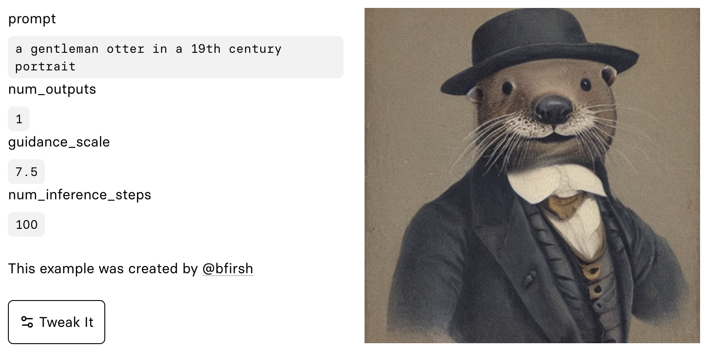

Part 2 overview
In this course, containing over 30 hours of video content, we implement the astounding Stable Diffusion algorithm from scratch! That’s the killer app that made the internet freak out, and caused the media to say “you may never believe what you see online again”.
We’ve worked closely with experts from Stability.ai and Hugging Face (creators of the Diffusers library) to ensure we have rigorous coverage of the latest techniques. The course includes coverage of papers that were released after Stable Diffusion came out – so it actually goes well beyond even what Stable Diffusion includes! We also explain how to read research papers, and practice this skill by studying and implementing many papers throughout the course.

Stable diffusion, and diffusion methods in general, are a great learning goal for many reasons. For one thing, of course, you can create amazing stuff with these algorithms! To really take the technique to the next level, and create things that no-one has seen before, you need to really deeply understand what’s happening under the hood. With this understanding, you can craft your own loss functions, initialization methods, multi-model mixups, and more, to create totally new applications that have never been seen before. Just as important: it’s a great learning goal because nearly every key technique in modern deep learning comes together in these methods. Contrastive learning, transformer models, auto-encoders, CLIP embeddings, latent variables, u-nets, resnets, and much more are involved in creating a single image.
To get the most out of this course, you should be a reasonably confident deep learning practitioner. If you’ve finished fast.ai’s Practical Deep Learning course then you’ll be ready! If you haven’t done that course, but are comfortable with building an SGD training loop from scratch in Python, being competitive in Kaggle competitions, using modern NLP and computer vision algorithms for practical problems, and working with PyTorch and fastai, then you will be ready to start the course. (If you’re not sure, then we strongly recommend getting starting with Practical Deep Learning.)
Get started now!
Content summary
In this course, we’ll explore diffusion methods such as Denoising Diffusion Probabilistic Models (DDPM) and Denoising Diffusion Implicit Models (DDIM). We’ll get our hands dirty implementing unconditional and conditional diffusion models, experimenting with different samplers, and diving into recent tricks like textual inversion and Dreambooth.
Along the way, we’ll cover essential deep learning topics like neural network architectures, data augmentation approaches, and various loss functions. We’ll build our own models from scratch, such as Multi-Layer Perceptrons (MLPs), ResNets, and Unets, while experimenting with generative architectures like autoencoders and transformers.
Throughout the course, we’ll use PyTorch to implement our models, and will create our own deep learning framework called miniai. We’ll master Python concepts like iterators, generators, and decorators to keep our code clean and efficient. We’ll also explore deep learning optimizers like stochastic gradient descent (SGD) accelerated approaches, learning rate annealing, and learning how to experiment with the impact different initialisers, batch sizes and learning rates. And of course, we’ll make use of handy tools like the Python debugger (pdb) and nbdev for building Python modules from Jupyter notebooks.
Lastly, we’ll touch on fundamental concepts like tensors, calculus, and pseudo-random number generation to provide a solid foundation for our exploration. We’ll apply these concepts to machine learning techniques like mean shift clustering and convolutional neural networks (CNNs), and will see how to use tracking with Weights and Biases (W&B).
We’ll also tackle mixed precision training using both NVIDIA’s apex library, and the Accelerate library from Hugging Face. We’ll investigate various types of normalization like Layer Normalization and Batch Normalization. By the end of the course, you’ll have a deep understanding of diffusion models and the skills to implement cutting-edge deep learning techniques.
Get started now!
Topics covered
Here’s a list of all the stuff that you’ll learn in detail and build from scratch in this course. (When we say “from scratch”, we mean that you’ll rely on nothing other than Python and its standard library.)
- Diffusion foundations
- Denoising Diffusion Probabilistic Models (DDPM)
- Forward and reverse processes
- Implementing a noise prediction model using a neural network
- Visualizing noisy images at different timesteps
- Denoising Diffusion Implicit Model (DDIM)
- DDPM/DDIM improvements
- Alternative noise schedules
- Pre-conditioning
- Implementation and performance of different samplers
- Euler sampler
- Ancestral Euler sampler
- Heuns method
- LMS sampler
- Implementing an unconditional stable diffusion model
- Creating a conditional stable diffusion model
- Inverse problems
- Textual inversion
- Dreambooth
- Denoising Diffusion Probabilistic Models (DDPM)
- Hugging Face’s Diffusers library
- Pre-trained pipelines
- Image-to-image pipelines
- Guidance scale
- Negative prompts
- Callbacks
- Working with Hugging Face datasets
- Deep learning optimizers
- Stochastic gradient descent (SGD) accelerated approaches
- Momentum
- RMSProp
- Adam
- Learning rate annealing
- PyTorch learning rate schedulers
- Cosine Annealing
- OneCycleLR
- PyTorch learning rate schedulers
- Experimenting with batch sizes and learning rates
- Working with PyTorch optimizers
- Stochastic gradient descent (SGD) accelerated approaches
- Python concepts
- Organizing and simplifying code
- Iterators and generators in Python
- Dunder methods
- Python data model
- Python debugger (pdb)
- Using nbdev to create Python modules from Jupyter notebooks
- try-except blocks
- decorators
- getattr
**kwargsand delegates
- Basic foundations
- Tensors
- Linear classifier using a tensor
- Matrix multiplication using Python and Numba
- Comparing APL with PyTorch
- Frobenius norm
- Broadcasting in deep learning and machine learning code
- Matrix multiplication
- Einstein summation notation and
torch.einsum - GPU acceleration and CUDA
- Numba
- Calculus
- Derivatives and Infinitesimals
- Finite differencing
- Analytic derivatives
- Loss functions
- Contrastive loss function
- Perceptual loss
log_softmax()function and cross entropy loss
- Pseudo-random number generation
- Wickman-Hill algorithm
- Random state in deep learning
- Tensors
- Neural network architectures
- Multi-Layer Perceptron (MLP) implementation
- Gradients and derivatives
- Chain rule and backpropagation
- PyTorch for calculating derivatives
- ReLU and linear function classes
- ResNets
- Generative architectures
- Autoencoders
- Convolutional autoencoders
- Variational autoencoders
- Unets
- Experimenting with cross connections in Unets
- CLIP text encoders and image encoders
- Transformers
- Self-attention and multi-headed attention
- Rearrange function
- Time embedding and sinusoidal embeddings
- Creating a super-resolution U-Net model
- Gradually unfreezing pre-trained networks
- Style transfer
- Content loss
- Gram Matrix
- Neural Cellular Automata
- Circular padding
- Gradient normalization
- Autoencoders
- Deep learning techniques
- Data augmentation techniques
- Random erasing
- TrivialAugment
- Test time augmentation
- Dropout for improving model performance
- Test time dropout for measuring model confidence
- Data augmentation techniques
- PyTorch
- PyTorch’s
nn.Moduleandnn.Sequential- Creating custom PyTorch modules
- Implementing optimizers, DataLoaders, and Datasets
- PyTorch hooks
- PyTorch’s
- Learner framework
- Building a flexible training framework
- Callbacks and exceptions (CancelFitException, CancelEpochException, CancelBatchException)
- Metrics and MetricsCB callback
- DeviceCB callback
- Refactoring code with context managers
- set_seed function
- Callback class and TrainLearner subclass
- HooksCallback and ActivationStats
- Experimenting with batch sizes and learning rates
- torcheval library
- Machine Learning Techniques and Tools
- Mean shift clustering
- Gaussian kernel
- Norms
- Log sum exp trick
- Convolutional Neural Networks (CNNs)
- Convolutions and kernels
- Im2col technique
- Padding and stride in CNNs
- Receptive field
- Building a CNN from scratch
- Weights and Biases (W&B) for experiment tracking
- Fréchet Inception Distance (FID) metric
- Kernel Inception Distance (KID) metric
- Mixed precision training
- Accelerate library from HuggingFace
- Collation function
- Initialization and normalization
- Histograms of activations
- Glorot (Xavier) initialization
- Variance, standard deviation, and covariance
- General ReLU activation function
- Layer-wise Sequential Unit Variance (LSUV)
- Layer Normalization and Batch Normalization
- Instance Norm and Group Norm
Get started now!
(The “topics covered” list was taken from the concatenation of the topic list of each lesson, and using GPT 4 with this prompt: “The input text contains a markdown list of topics discussed in a number of deep learning and stable diffusion lessons. The topics from each lesson were concatenated together into this list, therefore it may contain duplicates (or near dupes) and is not well organised. Create an organised markdown list which groups similar topics together (using a hierarchy or markdown list items as appropriate) and combine duplicate or very similar topics.” The “content summary” section was taken from the “topics covered” list, and the GPT 4 prompt “Summarise the following markdown course outline using 3-4 paragraphs of informal prose in the style of Jeremy Howard. Do not follow the same order as the topics in the outline, but instead arrange them such that the most foundational and key topics come first.”)